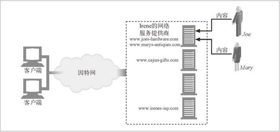
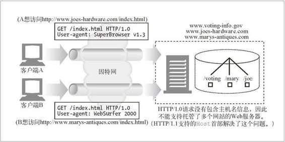
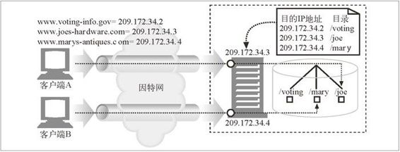
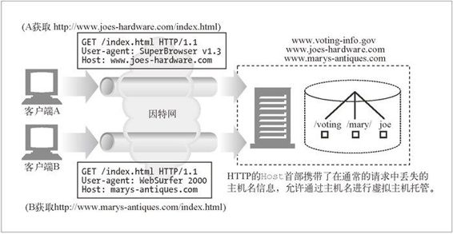

18.2 虚拟主机托管
许多人想要在 Web 上展现自己，但他们的网站流量都不大。对这些人来说，使用专用的 Web 服务器可能有点儿大材小用，因为他们每月花费数百美元租来的服务器大部分时间都是空闲的！
许多 Web 托管者通过让一些顾客共享一台计算机来提供便宜的 Web 主机托管服务。这称为共享主机托管或虚拟主机托管。每个网站看起来是托管在不同的服务器上，但实际上是托管在同一个物理服务器上。从最终用户的角度来看，被虚拟托管的网站应当和托管在专用服务器上的网站没什么区别。
从成本效益、空间以及管理方面考虑，提供虚拟主机托管的公司希望能在同一个服务器上托管数十、上百，甚至上千个网站——但这不一定意味着上千个网站是用一台 PC 机来提供服务的。托管者可以创建成排同样的服务器，称为服务器集群（server farm），把负载分摊在群里的服务器上。因为群里的每台服务器都一样，并且托管了许多虚拟网站，所以管理起来更加方便。（我们将在第 20 章更详细地介绍服务器集群。）
当 Joe 和 Mary 刚开始商务运作时，他们可能会选择虚拟主机托管，以节省费用，直到他们网站的流量规模达到值得使用专用服务器的水平为止（参见图 18-2）。

图 18-2 外包的虚拟主机托管
18.2.1 虚拟服务器请求缺乏主机信息
不幸的是，HTTP/1.0 中的一个设计缺陷会使虚拟主机托管者抓狂。HTTP/1.0 规范中没有为共享的 Web 服务器提供任何方法来识别要访问的是所托管的哪个虚拟网站。
回想一下，HTTP/1.0 请求在报文中只发送了 URL 的路径部分。如果要访问 http://www.joes-hardware.com/index.html，浏览器会连接到服务器 www.joes-hardware.com，但 HTTP/1.0 请求中只提到 GET /index.html，没有提到主机名。如果服务器虚拟托管了多个站点，就没有足够的信息能指出要访问的是哪个虚拟网站。图 18-3 就是这样的一个示例。
如果客户端 A 试图访问 http://www.joes-hardware.com/index.html，请求 GET / index.html 将被发送到共享的 Web 服务器。
如果客户端 B 试图访问 http://www.marys-antiques.com/index.html，同样的请求 GET /index.html 也将被发送到共享的 Web 服务器。

图 18-3 HTTP/1.0 服务器请求中没有主机名信息
就 Web 服务器而言，没有足够的信息可供其判断究竟要访问的是哪个网站。尽管请求的是完全不同的文档（来自不同的网站），但这两个请求看起来是一样的，这是因为网站的主机信息已经从请求中剥离了。
我们已经在第 6 章中介绍过，HTTP 替代物（反向代理）和拦截代理也都需要明确的站点信息。
18.2.2 设法让虚拟主机托管正常工作
缺失的主机信息是原始 HTTP 规范的疏忽，它错误地假设了每个 Web 服务器上只托管了一个网站。HTTP 的设计者没有为进行虚拟主机托管的共享服务器提供支持。正因为如此，URL 中的主机名信息被当作冗余信息剥离了，只要求发送路径部分。
因为早期的规范没有考虑到虚拟主机托管，Web 托管者需要开发变通的方案和约定来支持共享的虚拟主机托管。这个问题本可以通过要求所有 HTTP 请求报文发送完整的 URL 而不只是路径部分来简单地解决。而 HTTP/1.1 的确要求服务器能够处理 HTTP 报文请求行上的完整 URL，但将现存的应用程序都升级到这个规范还需要很长时间。在此期间，涌现了以下 4 种技术。
通过 URL 路径进行虚拟主机托管
在 URL 中增添专门的路径部分，以便服务器判断是哪个网站。
通过端口号进行主机托管
为每个站点分配不同的端口号，这样请求就由 Web 服务器的单独实例来处理。
通过 IP 地址进行主机托管
为不同的虚拟站点分配专门的 IP 地址，把这些地址都绑定到一台单独的机器上。这样，Web 服务器就可以通过 IP 地址来识别网站名了。
通过 Host 首部进行主机托管
很多 Web 托管者向 HTTP 的设计者施压，要求解决这个问题。HTTP/1.0 的增强版和 HTTP/1.1 的正式版定义了 Host 请求首部来携带网站名称。Web 服务器可以通过 Host 首部识别虚拟站点。
接下来详细介绍每种技术。
通过URL路径进行虚拟主机托管
可以通过分配不同的 URL 路径，用这种笨方法把共享服务器上的虚拟站点隔离开。例如，可以给每个逻辑网站一个专门的路径前缀。
Joe 的五金商店可以是：http://www.joes-hardware.com/joe/index.html。
Mary 的古董拍卖店可以是：http://www.marys-antiques.com/mary/index.html。
当请求到达服务器时，其中并没有主机名信息，但服务器可以通过路径来区分它们。
请求 Joe 的五金商店的网址是 GET /joe/index.html。
请求 Mary 的古董拍卖店的网址是 GET /mary/index.html。
这不是一个好办法。/joe 和 /mary 这样的前缀是多余的（主机名中已经提到 joe 了）。更糟的是，描述主页链接的常见约定：http://www.joes-hardware.com 或 http://www.joes-hardware.com/index.html 都不能用了。
总之，按 URL 来进行虚拟主机托管是一个糟糕的解决方案，很少会用到。
通过端口号进行虚拟主机托管
除了修改路径名，还可以在 Web 服务器上为 Joe 和 Mary 的网站分配不同的端口号。不再使用端口 80，而是采用其他端口号，例如，Joe 用 82，Mary 用 83。但这个解决方案也有同样的问题：终端用户不会乐意在 URL 中指定非标准的端口号。
通过IP地址进行虚拟主机托管
一个更常用的、更好的方法是通过 IP 地址进行虚拟化。每个虚拟网站都分配一个或多个唯一的 IP 地址。所有虚拟网站的 IP 地址都绑定到同一个共享的服务器上。服务器可以查询 HTTP 连接的目的 IP 地址，并以此来判断客户端的目标网站。
比方说，托管者把 IP 地址 209.172.34.3 分配给 www.joes-hardware.com，把 IP 地址 209.172.34.4 分配给 www.marys-antiques.com，把这两个 IP 地址都绑定到同一个物理服务器上。Web 服务器就能使用目的 IP 地址来识别用户请求的是哪个虚拟站点了，参见图 18-4。

图 18-4 虚拟 IP 的主机托管
客户端 A 获取 http://www.joes-hardware.com/index.html。
客户端 A 查询 www.joes-hardware.com 的 IP 地址，得到 209.172.34.3。
客户端 A 打开到共享服务器的 TCP 连接，目的地址是 209.172.34.3。
客户端 A 发送请求，内容为 GET /index.html HTTP/1.0。
在 Web 服务器提供响应之前，它注意到实际的目的 IP 地址（209.172.34.3），判断出这是 Joe 的五金网站的虚拟 IP 地址，就根据子目录 /joe 来完成请求。返回的是文件 /joe/index.html。
类似地，如果客户端 B 请求 http://www.marys-antiques.com/index.html。
客户端 B 查询 www.marys-antiques.com 的 IP 地址，得到 209.172.34.4。
客户端 B 打开到 Web 服务器的 TCP 连接，目的地址是 209.172.34.4。
客户端 B 发送请求，内容是 GET /index.html HTTP/1.0。
Web 服务器判断出 209.172.34.4 是 Mary 的网站，根据 /mary 目录来完成请求，返回的是文件 /mary/index.html。
对大的托管者来说，虚拟 IP 的主机托管能够工作，但它会带来一些麻烦。
在计算机系统上能绑定的虚拟 IP 地址通常是有限制的。想在共享的服务器上托管成百上千的虚拟站点的服务商不一定能实现愿望。
IP 地址是稀缺资源。有很多虚拟站点的托管者不一定能为被托管的网站获取足够多的 IP 地址。
托管者通过复制服务器来增加容量时，IP 地址短缺的问题就更严重了。随负载均衡体系的不同，可能会要求每个复制的服务器上有不同的虚拟 IP 地址，因此 IP 地址的需求量可能会随复制服务器的数量而倍增。
尽管虚拟 IP 的主机托管存在消耗地址的问题，但它仍然得到了广泛的运用。
通过Host首部进行虚拟主机托管
为了避免过度的地址消耗和虚拟 IP 地址的限制，我们希望在虚拟站点间共享同一个 IP 地址，且仍能区分站点。但正如我们看到的那样，因为大多数浏览器只是把 URL 的路径发给服务器，关键的虚拟主机名信息被其丢掉了。
为了解决这个问题，浏览器和服务器的实现者扩展了 HTTP，把原始的主机名提供给服务器。不过，浏览器不能只发送完整的 URL，因为这会使许多只能接收路径的服务器无法工作。替代的方法是，把主机名（和端口号）放在所有请求的 Host 扩展首部中传送。
在图 18-5 中，客户端 A 和客户端 B 都发送了携带有要访问的原始主机名的 Host 首部。当服务器收到对 /index.html 的请求时，可以通过 Host 首部来判断要使用哪个资源。

图 18-5 用 Host 首部区分请求的虚拟主机
Host 首部最早是在 HTTP/1.0+ 中引入的，它是开发商实现的 HTTP/1.0 的扩展超集。遵循 HTTP/1.1 标准则必须支持 Host 首部。绝大多数现代浏览器和服务器都支持 Host 首部，但仍有一些客户端和服务器（以及网络机器人）不支持它。
18.2.3 HTTP/1.1的Host首部
Host 首部是 HTTP/1.1 的请求首部，定义在 RFC 2068 中。由于虚拟服务器的流行，绝大多数 HTTP 客户端（即使是不遵循 HTTP/1.1 的客户端），都实现了 Host 首部。
语法与用法
Host 首部描述了所请求的资源所在的因特网主机和端口号，和原始的 URL 中得到的一样：
Host = "Host" ":" host [ ":" port ]
但要注意以下问题。
如果 Host 首部不包含端口，就使用地址方案中默认的端口。
如果 URL 中包含 IP 地址，Host 首部就应当包含同样的地址。
如果 URL 中包含主机名，Host 首部就必须包含同样的名字。
如果 URL 中包含主机名，Host 首部就不应当包含 URL 中这个主机名对应的 IP 地址，因为这样会扰乱虚拟主机托管服务器的工作，它在同一个 IP 地址上堆叠了很多虚拟站点。
如果 URL 中包含主机名，Host 首部就不应当包含这个主机名的其他别名，因为这样也会扰乱虚拟主机托管服务器的工作。
如果客户端显式地使用代理服务器，客户端就必须把原始服务器，而不是代理服务器的名字和端口放在 Host 首部中。以往，若干个 Web 客户端在启用客户端代理设置时，错误地把发出的 Host 首部设置成代理的主机名。这种错误行为会使代理和原始服务器都无法正常处理请求。
Web 客户端必须在所有请求报文中包含 Host 首部。
Web 代理必须在转发请求报文之前，添加 Host 首部。
HTTP/1.1 的 Web 服务器必须用 400 状态码来响应所有缺少 Host 首部字段的 HTTP/1.1 请求报文。
下面是一段简单的 HTTP 请求报文，用于获取 www.joes-hardware.com 的主页，其 中带有必需的 Host 首部字段：
GET http://www.joes-hardware.com/index.html HTTP/1.0
Connection: Keep-Alive
User-Agent: Mozilla/4.51 [en] (X11; U; IRIX 6.2 IP22)
Accept: image/gif, image/x-xbitmap, image/jpeg, image/pjpeg, image/
png, */*
Accept-Encoding: gzip
Accept-Language: en
Host: www.joes-hardware.com
缺失Host首部
有少量在用的老式浏览器不会发送 Host 首部。如果某个虚拟主机托管服务器使用 Host 首部来判断所服务的是哪个网站，而报文中没有出现 Host 首部的话，那它可能会把用户导向某个默认的 Web 页面（例如网络服务提供商的 Web 页面），也可能返回一个错误页面建议用户升级浏览器。
解释Host首部
对于没有进行虚拟主机托管，而且不允许资源随请求主机的不同而变化的原始服务器来说，可以忽略 Host 首部字段的值。但资源会随主机名的不同而变化的原始服务器，都必须在一条 HTTP/1.1 请求判断其所请求的资源时使用下列规则。
如果 HTTP 请求报文中的 URL 是绝对的（也就是说，包含方案和主机部分），就忽略 Host 首部的值。
如果 HTTP 请求报文中的 URL 没有主机部分，而该请求带有 Host 首部，则主机 / 端口的值就从 Host 首部中取。
如果通过第 1 步或第 2 步都无法获得有效的主机，就向客户端返回 400 Bad Request 响应。
Host首部与代理
某些版本的浏览器发送的 Host 首部不正确，尤其是配置使用代理的时候。例如，配置使用代理时，一些老版本的 Apple 和 PointCast 客户端会错误地把代理的名字，而不是原始服务器的名字放在 Host 首部里发送。